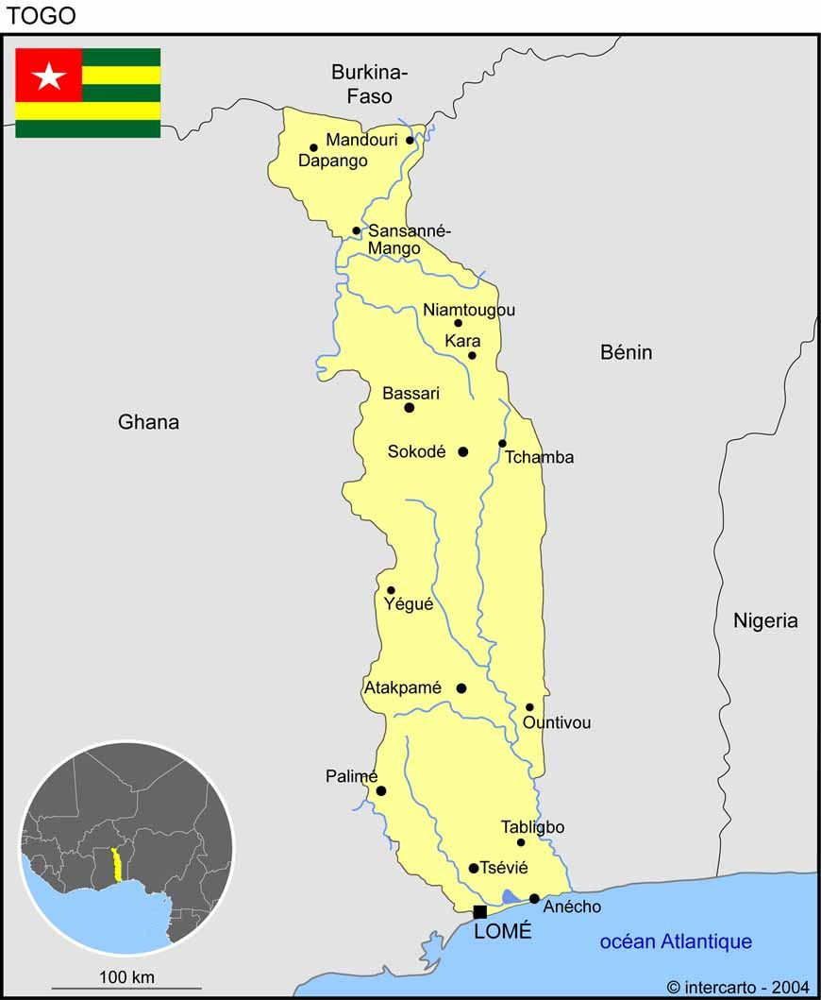

LA PRESENTATION DU TOGO

DESCRIPTION
Le Togo est un pays d'Afrique de l'Ouest situé dans le golfe de Guinée.
Il est connu pour ses plages bordées de palmiers et ses villages au sommet des collines.
La région du Koutammakou est habitée par le peuple des Batammariba, occupant des huttes
en argile traditionnelles ressemblant à des forteresses qui remontent au XVIIe siècle.
La capitale Lomé est dotée d'un bazar sur plusieurs étages appelé Grand Marché ainsi
que du Marché aux fétiches qui propose des remèdes et des talismans traditionnels en
rapport avec le culte vaudou.
LES PLACES A VISITER
- Le parc national de la kéran
- Les cascades de kpalimé
- Le chateau viale
ANECDOTES
- Le TGOGO est un territoires qui est constituéé de plusieurs ethnies à la fois et donc de plusieurs divesrsités culturelles.
Alors ce quil faut retenir c'est que chaque région ou chaque ethnies devrais-je dire a sa cararactéristique.
Vous aimez la viande de pintade, la boisson local Tchakpalo, les peuhls avec les troupeux de boeuf traversant
la vois goudronnée,bref une vie moderne ,combinée d'une vie à au temps
de nos grands parents ou arrières grand_parents? dans ce cas bienvenu dans la région des savanes.
Cependant la population est très solidaire et très acceuillante,même si parfois le vent sec et poussièreux qui est l'harmattan en vient àrendre la vie un peu désagréable
, c'est un milieu où il fait beau vivvre avec un beau paysage accidenté.
- Bienvenu en pays kabyè où règne la demonstration de force à tout égard; rassurez vous il ne s'agit pas de la boxe où d'un endroit transformé en ring où tout
le monde se cogne dessus ,non du tout. En réalité je voudrais parler de la plus grande et célèbre fête de la région qui s'appelle EVALA. Sa particularité c'est
la viande du CHIEN car sans elle la cérémonie ne saurait se dérouler et la boisson local,le TCHOUCK. Egalement en cette même période se déroule la cérémonie de
AKPEMA qui concerne uniquement la jeune fille vierge en âge adulte. Pour faire simple c'est une période de réjouissance reunissant pratiquement toute la population
togolaise et des étrangers venant du monde entier afin découvrir les richesses culturelles de la localité et tout ceci dans une convivialité sans précédente ,
qui se déroule au mois de juillet de chaque année et qui concerne spécifiquement le jeune garçon et la jeune fille
afin de marquer leur passage de l'adolescence à l'âge adulte. Cest un milieu essentiellement marqué par l' agriculture; avec un paysage accidenté. Faites-y un tour et vous ne serez pas dèçu.
- Comme beaucoup de constructions coloniales, il en existent encore au togo, plus précisement dans la région maritime. Ces constructions font
partie intégrante de l'histoire et constituent des sites donnent un visage carrement différent de ce qu'on peut croiser dans les autres régions. Cette particularité
rend la région belle et plus particulièrement la ville de lomé, la maison des esclaves à Agbodrafo etc... Il fait partculièrement frais de part le climat modéré qui
couvre le sud du pays. La capitale qui est lomé est encore appelé lomé la belle et comme le spécifie son nom c'est une ville vraiment belle.
D'avance nous vous souhaitons la bienvenue au TOGO; WÉESON LOOOOO !